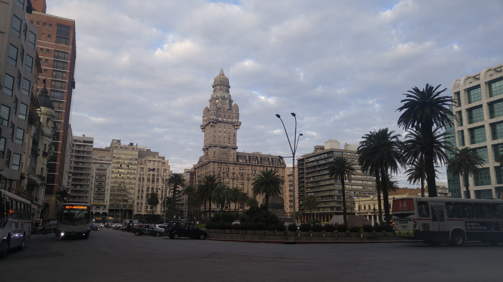

Go Back
Montevideo

Montevideo is the capital and largest city in Uruguay. It also happens to be the city I was born in. Nearly half of the countries 3.4 million residents live here. It's an interesting city with lots of fun activities and delicious food to try. Here is my guide to visiting Montevideo.
Plaza Independencia is the most important plaza in the city and is worth a visit. It separates El Centro from the old city. In the middle of the plaza is the Artigas Mausoleum. Artigas was the liberator of Uruguay and is considered a national hero. Many important buildings, such as the Solís Theatre and the workplaces of the President of Uruguay (both the Estévez Palace and the Executive Tower) are located by this square. You can stroll around, people watch and enjoy the nice European style architecture of the buildings.
Ciudad Vieja or the old city is the historic part of Montevideo. Located right next to the city center this area is full of old buildings and is the original area that people began building the city. Until 1829 it was surrounded by a wall that protected it from possible invasions. After the wall was torn down, the only part of it that was preserved was the main gateway to the Citadel, which remains to this day as an emblem of Montevideo.
Rambla de Montevideo is the path that stretches along 24 km of beach. You will find some of the most scenic views of the city here as well as it's beaches. Along the Rambla there are plenty of different businesses such as restaurants, bars and shopping. You can also find the Montevideo sign along the Rambla which is a good photo taking spot. You will see people cycling, playing football and skateboarding along the Rambla.
Montevideo has fantastic food options. There are many traditional Uruguayan parillas you can visit to have delicious meats such as chorizo, mollejas, pamplona, asado and more. One of my favourite things about Montevideo are the choripan carts that you will see around. I highly recommend trying a choripan. It's a chorizo on a tortuga bun with your choice of spicy/ sweet peppers, sauces and toppings. These choripan sandwiches are absolutely delicious and you should most definitely try one in Montevideo. Also I'd recommend checking out Mercado del Puerto which is an old port market filled with many steakhouses. As I mentioned in my Punta del Este section Uruguayans favourite drink is something called Mate. It's like a tea that people drink out of a gourd with a bombilla (like a metal straw). You will see people everywhere with thermoses of hot water sipping on this extremely popular drink. It's a huge part of the culture in Uruguay and you will see people drinking mate in all sorts of different situations. If you enjoy caffeine you should give it a try while you're visiting Uruguay.
Cordón is the area I stayed in during my last visit to the city. It's between the city center and Tres Cruces bus station so it's very well situated. I'd recommend staying at Che Lagarto hostel if you are opting to stay in hostels. I found the location to be excellent and the price to be fair. There are many businesses in this area and it's great for shopping. If you're looking for a good spot for a night out definitely check out Clandestino bar. It's a small but cool little pub that gets quite packed on weekends. There is sometimes live music and it's definitely worth a visit.
El Centro is likely a neighbourhood you will visit while in Montevideo. Its main avenue is 18 de Julio Avenue. It's separated from the Ciudad Vieja by Plaza Independencia. You can also see the famous Teatro Solis right across the street from the plaza. The neighbourhood filled with charming European style architecture, street art, lots of shopping, services as well as food and drink options. There are many busy cafes where you can stop for a cappuchino or go have a gelato. There are lots of hotels and hostels in this area as well and it would be a good area to stay in.
Ciudad Vieja is the old part of the city. It's where the city was first built and is full of historic buildings. I enjoyed walking around this neighbourhood looking at the old buildings. There is plenty of great street art in this neighbourhood.